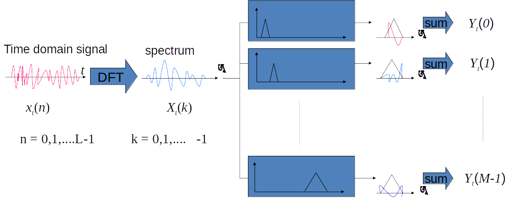

<!DOCTYPE html>
<html lang="en">
  <head>
    <meta charset="utf-8" />
    <meta name="viewport" content="width=device-width, initial-scale=1.0, maximum-scale=1.0, user-scalable=no" />

    <title>IR Final: Speech and BERT (21.01.15)</title>
    <meta property="og:title" content="IR Final: Speech and BERT (21.01.15)" />
    <meta property="og:type" content="website" />
    <meta property="og:image" content="https://slides.hanklu.tw/featured-slide.jpg" />
    <meta property="og:url" content="https://slides.hanklu.tw" />
    <link rel="shortcut icon" href="./favicon.ico"/>
    <link rel="stylesheet" href="./dist/reveal.css" />
    <link rel="stylesheet" href="_assets/theme/mytheme.css" id="theme" />
    <link rel="stylesheet" href="./css/highlight/zenburn.css" />

  </head>
  <body>
    <div class="reveal">
      <div class="slides"><section  data-markdown><script type="text/template">

# Speech and BERT <!-- .element: class="title" -->

<div class="title-name">
2021.01.15 <br>
盧克函 游照臨 吳苡瑄
</div>
</script></section><section  data-markdown><script type="text/template">
# An Audio-enriched BERT-based Framework for Spoken Multiple-choice Question Answering <!-- .element: class="title" -->
## Chia-Chih Kuo, Shang-Bao Luo, Kuan-Yu Chen <!-- .element: class="subtitle" -->


</script></section><section  data-markdown><script type="text/template">
## Outline

- Task(SMCQA)
- Methodology
  - TSAtt
  - aeBERT
- Experimental Setup
- Experimental Results
- Conclusion
</script></section><section ><section data-markdown><script type="text/template">
## Spoken Multiple-choice Question Answering

- Spoken MCQA

  - 1 Passage 🔊
  - 1 Question 🔊
  - Multiple choices 🔊

- Listening comprehension task

</script></section><section data-markdown><script type="text/template">
## Naïve Approaches


</script></section><section data-markdown><script type="text/template">
## Naïve Approaches.


</script></section></section><section ><section data-markdown><script type="text/template">
# Methodology <!-- .element: class="slide-center" -->
</script></section><section data-markdown><script type="text/template">
## Vanilla BERT

- Passage $p=\\{w_1^p, w_2^p,\cdots,w_{|p|}^p\\}$
- Question $q = \\{w_1^q, w_2^q,\cdots,w_{|q|}^q \\}$
- $n^{th}$ choice $c_n = \\{w_1^{c_n}, w_2^{c_n},\cdots,w_{|{c_n}|}^{c_n} \\}$
- Concatenation of token sequence
  - QCP

$$
\\{[CLS], q, c_n, [SEP], p, [SEP]\\}
$$

 <!-- .element: class="img50" -->
</script></section><section data-markdown><script type="text/template">
## Audio-enriched BERT-based Framework
- aeBERT(Proposed)


</script></section><section data-markdown><script type="text/template">
## Temporal-spectral Attention Layer

- For each auto-transcribed token $w_i$ and its corresponding acoustic feature vectors(MFCCs)

$$
\mathcal{F}^{w_i} = \\{f_1^{w_i}, \cdots, f_{|w_i|}\\} \in \mathbb{R}^{d_a \times |w_i|}
$$


</script></section><section data-markdown><script type="text/template">
## MFCCs

- Front-end Signal Processing


國立臺灣大學 李琳山教授 【數位語音處理概論】<!-- .element: class="footnote" -->

</script></section><section data-markdown><script type="text/template">
## MFCCs.




國立臺灣大學 李琳山教授 【數位語音處理概論】<!-- .element: class="footnote" -->
</script></section><section data-markdown><script type="text/template">
## MFCCs..

- Pre-emphasis
- Framing & window
- Short time FT
- Mel Filter-bank ➝ **F-bank**
- Inverse FT
- Derivatives
- ➝ **MFCC** (43)
</script></section><section data-markdown><script type="text/template">
## Temporal-spectral Attention Layer.

- Attention map

$$
A^{w_i} = \text{softmax}(\mathcal{W}_a\mathcal{F}^{w_i})
$$

$$
\mathcal{W}_a \in \mathbb{R}^{d_a \times d_a},
A^{w_i} \in \mathbb{R}^{d_a \times |w_i|}
$$


</script></section><section data-markdown><script type="text/template">
## Temporal-spectral Attention Layer..

- Acoustic level representation

$$
v^{w_i} = \sum^{|w_i|}_{j=1}\[ A^{w_i} \odot  \mathcal{F}^{w_i}\]
$$


</script></section><section data-markdown><script type="text/template">
## Temporal-spectral Attention Layer...

- Acoustic level representation with size $d_t$ 🤗

$$
\hat{v}^{w_i} = \mathcal{W}_sv^{w_i} + b_s
$$

$$
\hat{v}^{w_i} \in \mathbb{R}^{d_t}
$$


</script></section><section data-markdown><script type="text/template">
## aeBERT.


</script></section><section data-markdown><script type="text/template">
## aeBERT..

$$
r^{c_n} = \mathcal{W}_rh^{[CLS]^{c_n}} + b_r
$$

$$
P(c_n) = \frac{\exp (r^{c_n})}{\sum^N_{n^\prime=1}\exp (r^{c_{n^\prime}})}
$$


</script></section></section><section ><section data-markdown><script type="text/template">
# Experimental Setup <!-- .element: class="slide-center" -->
</script></section><section data-markdown><script type="text/template">## Experimental Setup

**Dataset**
  - 2018 Fromosa Grand Challenge
    - Dev set, test set, advanced test set
  - A passage, a question and 4 candidate choices
  - Including science, news, medicine, literature, history and so on.

**ASR system**
  - Kaldi
    - trained based on TDNN-F with lattice-free MMI
  - **Error rate 7.79%**
</script></section><section data-markdown><script type="text/template">
## Experimental Setup.

**BERT**

- Huggingface
- 1 epoch MSE warm up
  - Minimize MSE between acoustic-level representation ($v^{w_i}$) and token embeddings.
- Finetune aeBERT
</script></section></section><section ><section data-markdown><script type="text/template">
# Experimental Results <!-- .element: class="slide-center" -->
</script></section><section data-markdown><script type="text/template">
## Vanilla BERT

w.r.t **manual transcriptions** and **auto-transcribed text**

- Upper bound


</script></section><section data-markdown><script type="text/template">

## Performance


</script></section><section data-markdown><script type="text/template">
## Our Experiment


</script></section></section><section ><section data-markdown><script type="text/template">
## Conclusion

**Audio-enriched BERT-based framework**
- Proposed framework showed remarkable superiority than other strong baselines, indicating the potential of the framework.
- TSAtt: temporal and spectra attention

**Future work**
- Evaluate the framework on other dataset.
- Extend the proposed aeBERT to other NLP-related tasks

</script></section><section data-markdown><script type="text/template">
## Our contribution from this presentation
*the reason you shoud give us full points! ;-)*

- We introduced the **MFCCs** and **F-bank** representations, which are everywhere in speech research field.
- We shared a novel method to use pretrained BERT for different task.


</script></section></section></div>
    </div>

    <script src="./dist/reveal.js"></script>

    <script src="./plugin/markdown/markdown.js"></script>
    <script src="./plugin/highlight/highlight.js"></script>
    <script src="./plugin/zoom/zoom.js"></script>
    <script src="./plugin/notes/notes.js"></script>
    <script src="./plugin/math/math.js"></script>
    <script>
      function extend() {
        var target = {};
        for (var i = 0; i < arguments.length; i++) {
          var source = arguments[i];
          for (var key in source) {
            if (source.hasOwnProperty(key)) {
              target[key] = source[key];
            }
          }
        }
        return target;
      }

      // default options to init reveal.js
      var defaultOptions = {
        controls: true,
        progress: true,
        history: true,
        center: true,
        transition: 'default', // none/fade/slide/convex/concave/zoom
        plugins: [
          RevealMarkdown,
          RevealHighlight,
          RevealZoom,
          RevealNotes,
          RevealMath
        ]
      };

      // options from URL query string
      var queryOptions = Reveal().getQueryHash() || {};

      var options = extend(defaultOptions, {"controls":true,"progress":true,"histroy":true,"center":false,"slideNumber":true}, queryOptions);
    </script>


    <script>
      Reveal.initialize(options);
    </script>
  </body>
</html>
